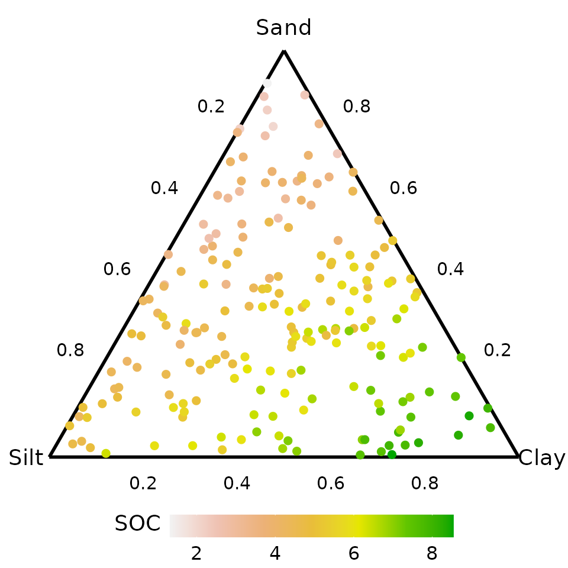
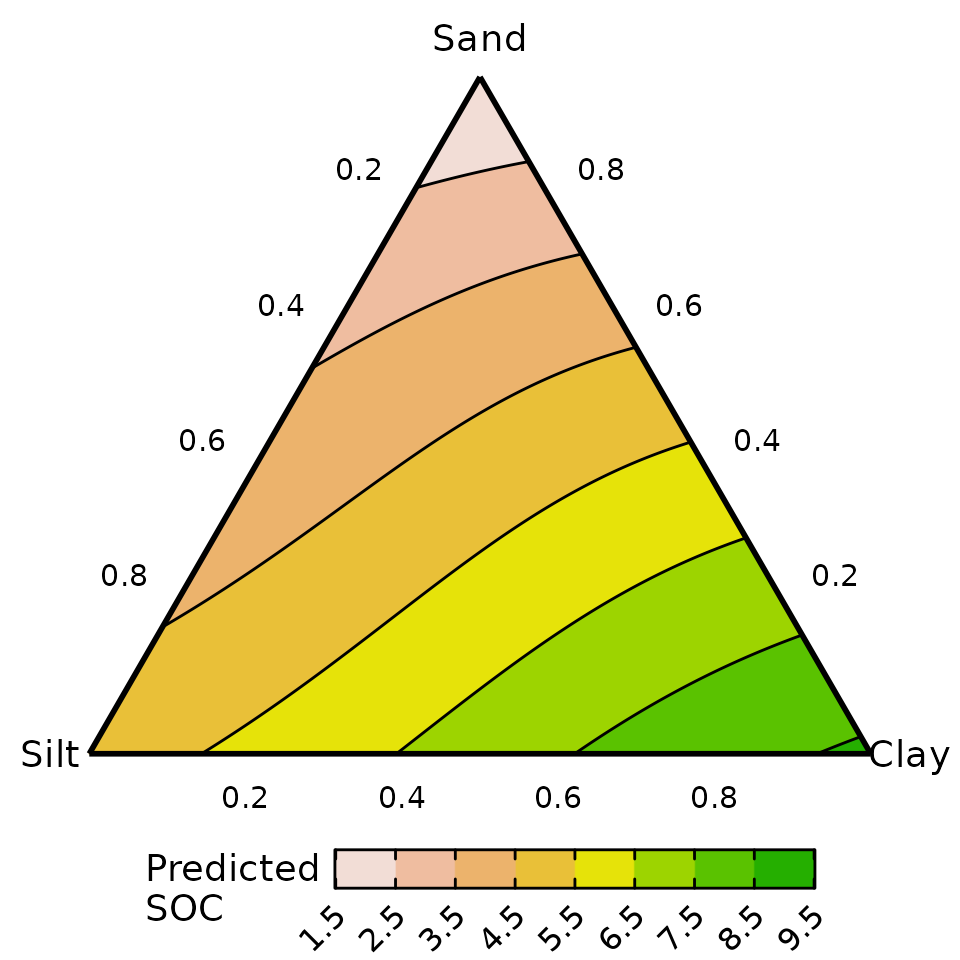
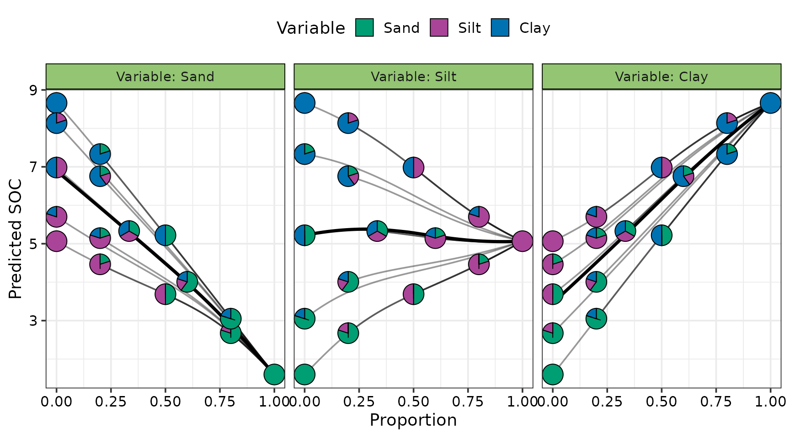
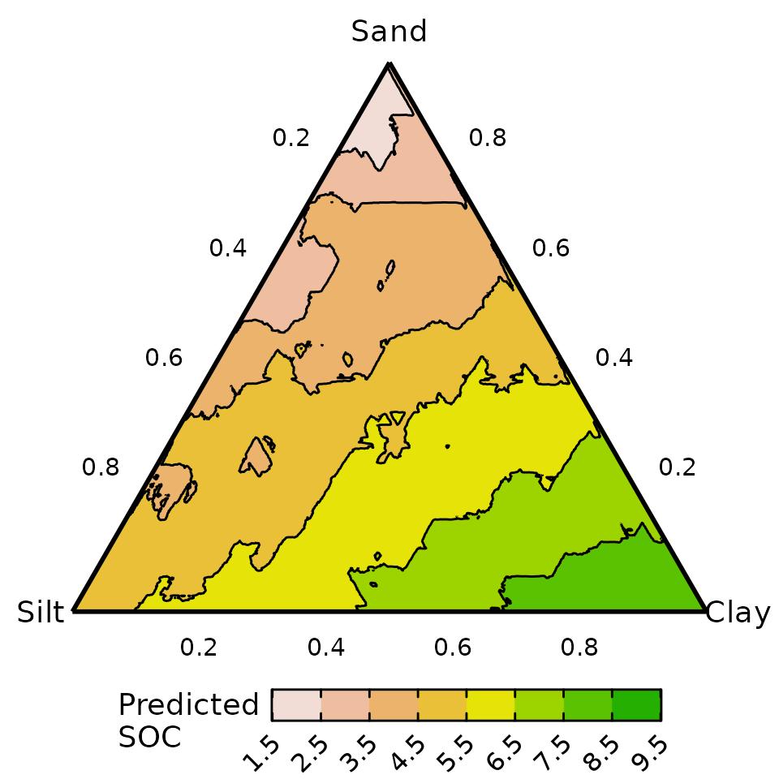

DImodelsVis with black-box models
DImodelsVis-with-black-box-models.RmdThis vignette shows an example of how DImodelsVis can be
used to visualise the response surface across the simplex space using
black-box style models such as neural networks or random forests. Note
that, while we show limited examples in this vignetted, it is worth
noting that all visualisations in the package except for model
diagnostics and prediction contributions plots can be created for
black-box style models.
Data
For this example we simulate a dataset containing 200 soil samples with varying proportions of sand, silt and clay, constrained to sum to one. The response variable is soil organic carbon (SOC) and was simulated to reflect that soils richer in clay have higher SOC, those with more silt have moderate SOC, and those dominated by sand have lower SOC.
# For reproducability
set.seed(123)
# Number of samples
n <- 200
# Simulate 3d compositional data
# Assume equal density for each variable
alpha <- c(1, 1, 1)
X <- matrix(rgamma(n * length(alpha), shape = alpha), ncol = length(alpha), byrow = TRUE)
X <- X / rowSums(X) # normalize to sum to 1
colnames(X) <- c("Sand", "Silt", "Clay")
# Simulate Soil organic carbon (SOC) to be used as a response
# We assume, SOC is higher for higher clay content, lower for sand, moderate for silt
SOC <- 4 + 5*X[, "Clay"] - 2*X[, "Sand"] + 1*X[, "Silt"] + rnorm(n, 0, 0.5)
# Combine the compositional predictors and continuous response into data frame
soil_data <- data.frame(X, SOC)
# Snippet of data
head(soil_data)
#> Sand Silt Clay SOC
#> 1 0.05207917 0.48465979 0.46326105 6.418575
#> 2 0.40839428 0.14664048 0.44496524 5.772358
#> 3 0.70241947 0.17418870 0.12339183 3.876166
#> 4 0.02781371 0.76193153 0.21025476 5.958198
#> 5 0.14917454 0.06014499 0.79068047 7.389891
#> 6 0.38854192 0.59306319 0.01839489 4.266738Visualising raw data
We create a ternary diagram using the tenrary_plot()
function showing the spread of data across the 3d simplex space. The
points are coloured by SOC values, with higher values colour green and
lower values given shades of pink and white.
ternary_plot(
# Compositional variables
prop = c("Sand", "Silt", "Clay"),
# Labels for ternary axes
tern_labels = c("Sand", "Silt", "Clay"),
# Data with compositional variables
data = soil_data,
# Show raw data as points instead of a contour map
show = "points",
# Colour points by SOC variable
col_var = "SOC")
#> ✔ Created plot.
Neural network
We fit a basic neural network containing a single hidden layer with
seven nodes to the soil data using the proportions of sand, silt, and
clay as predictors. Additional parameters such as decay,
linout, maxit are set (explained in code) at
specific values to ensure predictions are consistent across successive
runs of the neural network.
# Seed to ensure weight initialisation is reproducible
set.seed(737)
nn_model <- nnet(SOC ~ Sand + Silt + Clay,
data = soil_data,
size = 7, # Seven nodes in hidden layer
decay = 0.01, # Parameter for weight decay (helps stabilise predictions)
linout = TRUE, # Boolean to indicate continuous predictions
maxit = 1000) # Number of iterations
#> # weights: 36
#> initial value 5889.515493
#> iter 10 value 92.408488
#> iter 20 value 59.759351
#> iter 30 value 55.918516
#> iter 40 value 55.340256
#> iter 50 value 54.565252
#> iter 60 value 54.080642
#> iter 70 value 54.008865
#> iter 80 value 53.986853
#> iter 90 value 53.836320
#> iter 100 value 53.795719
#> iter 110 value 53.792304
#> iter 120 value 53.791058
#> iter 130 value 53.790159
#> iter 140 value 53.790024
#> iter 150 value 53.789949
#> final value 53.789940
#> converged
nn_model
#> a 3-7-1 network with 36 weights
#> inputs: Sand Silt Clay
#> output(s): SOC
#> options were - linear output units decay=0.01Visualise response surface across ternary
The predicted SOC surface across the 3d simplex space is visualised
here. We first generated the grid of points across the simplex space
using the ternary_data() function and then use the neural
network to predict the SOC. The data.frame containing the grid of points
and corresponding predicted SOC is then passed to the
ternary_plot() function for visualising the response
surface.
While we set the prediction = FALSE argument here and
add the predictions at a later step using the
add_prediction() function from DImodelsVis.
Users can also use the base R predict() function or any
custom function of their choice which returns the predicted response
from a black-box model.
# Prepare data
ternary_grid <- ternary_data(# Compositional predictors
prop = c("Sand", "Silt", "Clay"),
# Don't make predictions now and only return template
prediction = FALSE)
head(ternary_grid)
#> Sand Silt Clay .x .y
#> 1 0 1.0000000 0.000000000 0.000000000 0
#> 2 0 0.9983306 0.001669449 0.001669449 0
#> 3 0 0.9966611 0.003338898 0.003338898 0
#> 4 0 0.9949917 0.005008347 0.005008347 0
#> 5 0 0.9933222 0.006677796 0.006677796 0
#> 6 0 0.9916528 0.008347245 0.008347245 0The predicted response from the neural network can now be added to
the data template created by the ternary_data()
function.
# Add the predicted response to data
plot_data <- add_prediction(# Grid data from ternary_data() function
data = ternary_grid,
# Model to use for making predictions
model = nn_model,
# No uncertainty interval added to data
interval = "none")
# The predicted response is added as a column called .Pred
head(plot_data)
#> Sand Silt Clay .x .y .Pred
#> 1 0 1.0000000 0.000000000 0.000000000 0 5.065849
#> 2 0 0.9983306 0.001669449 0.001669449 0 5.070338
#> 3 0 0.9966611 0.003338898 0.003338898 0 5.074839
#> 4 0 0.9949917 0.005008347 0.005008347 0 5.079352
#> 5 0 0.9933222 0.006677796 0.006677796 0 5.083876
#> 6 0 0.9916528 0.008347245 0.008347245 0 5.088413The response surface can be visualised as follows
# Create ternary plot
ternary_plot(data = plot_data, # Compositional data with predicted response
lower_lim = 1.5, # Lower limit of fill scale
upper_lim = 9.5, # Upper limit of fill scale
nlevels = 8, # Number of colours for fill scale
# Labels for ternary axes
tern_labels = c("Sand", "Silt", "Clay")) +
# ggplot function to add labels on plot
labs(fill = "Predicted\nSOC")
#> ✔ Created plot.
The predicted SOC is higher in soil containing high proportions of clay and lower in soil containing high amounts of sand.
Effects plots for the compositional predictors
We can also generate effects plots for the compositional predictors
in the neural network. First, the dataset needed for generating the
effects plot is created using the visualise_effects_data()
function. The predicted SOC is then added to the data using the
add_prediction() function and the prepared data is passed
onto the visualise_effects_plot() function for visualising
the effects.
Users could also set prediction = TRUE and have the
predictions added to the data in the data preparation step itself, as
shown in the random-forest example later in the vignette.
# Compositions to be used for generating the effects plots.
# Not all are needed but having more initial compositions gives higher accuracy.
eff_data <- tribble(~"Sand", ~"Silt", ~"Clay",
1, 0, 0,
0, 1, 0,
0, 0, 1,
0.5, 0.5, 0,
0.5, 0, 0.5,
0, 0.5, 0.5,
0.8, 0.2, 0,
0.2, 0.8, 0,
0.8, 0, 0.2,
0.2, 0, 0.8,
0, 0.8, 0.2,
0, 0.2, 0.8,
0.6, 0.2, 0.2,
0.2, 0.6, 0.2,
0.2, 0.2, 0.6,
1/3, 1/3, 1/3)
# The data-preparation, adding predictions and plotting are done in a single dplyr pipeline here
# Prepare data
visualise_effects_data(# Data with initial compostions
data = eff_data,
# Column names for compositional predictors in data
prop = c("Sand", "Silt", "Clay"),
# Show effects plot for all compostional variables
var_interest = c("Sand", "Silt", "Clay"),
# Don't make predictions now and only return template
prediction = FALSE) %>%
# Add predictions
add_prediction(interval = "none", # No uncertainty intervals
model = nn_model) %>% # Model to use for making predictions
# Print first few rows of data
as_tibble() %>% print(n = 6) %>%
# Create plot
visualise_effects_plot() +
# ggplot function to add labels on plot
labs(y = "Predicted SOC")
#> ✔ Finished data preparation.
#> # A tibble: 4,545 × 8
#> Sand Silt Clay .Sp .Proportion .Group .Effect .Pred
#> <dbl> <dbl> <dbl> <fct> <dbl> <int> <chr> <dbl>
#> 1 0 1 0 Sand 0 1 increase 5.07
#> 2 0.01 0.99 0 Sand 0.01 1 increase 5.03
#> 3 0.02 0.98 0 Sand 0.02 1 increase 5.00
#> 4 0.03 0.97 0 Sand 0.03 1 increase 4.97
#> 5 0.04 0.96 0 Sand 0.04 1 increase 4.94
#> 6 0.05 0.95 0 Sand 0.05 1 increase 4.91
#> # ℹ 4,539 more rows
#> ✔ Created plot.
Increasing the proportion of sand lowers SOC, while increasing clay raises it. The effect of silt depends on the soil context: it tends to increase SOC in sand-rich soils but reduce it in clay-rich soils, leading to an overall flat effect of silt on SOC.
Random forest model
We also show an example of using DImodelsVis with random
forest models. The same pipeline as depicted above can be used with
random forest models to create visualisations from
DImodelsVis.
We first a random forest model using the proportions of sand, silt, and clay as well as their pairwise interactions as predictors.
forest_model <- randomForest(# Predictor for random forest model
SOC ~ Sand + Silt + Clay +
Sand:Silt + Silt:Clay + Sand:Clay,
# Data
data = soil_data,
# 5000 trees to be used random forest
ntree = 5000)
forest_model
#>
#> Call:
#> randomForest(formula = SOC ~ Sand + Silt + Clay + Sand:Silt + Silt:Clay + Sand:Clay, data = soil_data, ntree = 5000)
#> Type of random forest: regression
#> Number of trees: 5000
#> No. of variables tried at each split: 1
#>
#> Mean of squared residuals: 0.3552504
#> % Var explained: 82.15Response surface across ternary using random forests
Similar to above, we could visualise the predicted response surface
for SOC across the three dimensional simplex space using a ternary
diagram. For this example, we also showcase the use of setting
prediction = TRUE in the ternary_data()
function to automatically add predictions to created grid of points for
the ternary diagram. This prepared data is then passed to the
ternary_plot() function to visualise the response
surface.
The prediction = TRUE argument can be specified in any
of the data preparation functions in the package to automatically add
predictions to the prepared data. However, when working with complex
models with multiple predictions, care should be taken as users may wish
to supply values for these predictors other than the function’s
defaults.
# Prepare data
ternary_data(# Names of compositional predictors
prop = c("Sand", "Silt", "Clay"),
# Model to use for making predictions
model = forest_model,
# Add predictions directly
prediction = TRUE) %>%
ternary_plot(lower_lim = 1.5, # Lower limit of fill scale
upper_lim = 9.5, # Upper limit of fill scale
nlevels = 8, # Number of colours for fill scale
# Labels for ternary axes
tern_labels = c("Sand", "Silt", "Clay")) +
# ggplot function to add labels on plot
labs(fill = "Predicted\nSOC")
#> ✔ Created plot.
A similar inference can be drawn as the neural network: predicted SOC is higher in soils with greater clay content and lower in those with higher sand content. However, the predicted response surface is noticeably more jagged for a random forest compared to a neural network or standard linear regression model. This could be improved by either fine tuning the model parameters further or by applying a post-processing smoothing operation over the predicted values.